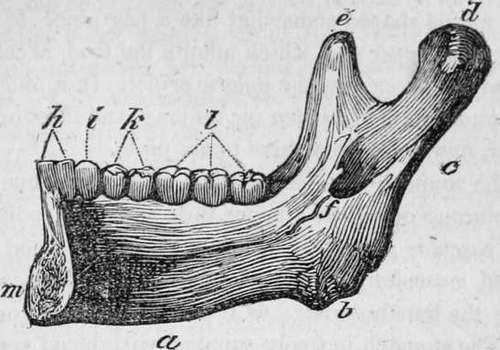
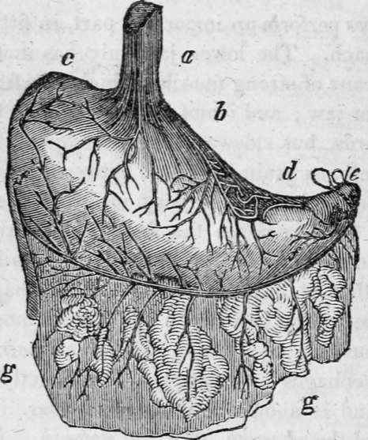
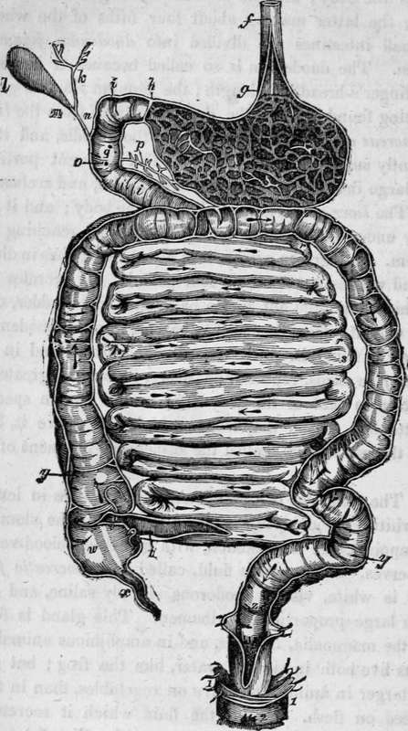

Chapter XX. Nutritive Functions.-Digestion
Description
This section is from the book "Human Physiology For The Use Of Elementary Schools", by Charles Alfred Lee. Also available from Amazon: Human Physiology, for the Use of Elementary Schools.
Chapter XX. Nutritive Functions.-Digestion
1. Digestion, absorption, secretion, and nutrition constitute what are called the nutritive functions. Digestion is that process by which the food is brought into a state in which it may be taken up by the lacteal vessels and carried into the blood. The digestive apparatus consists of the mouth and its appendages ; the pharynx ; esophagus ; the stomach and intestines; the whole tract making what is called the alimentary canal. Besides these, there are the salivary glands ; the liver ; the pancreas, or sweet bread of animals; all of which aid in tho process of digestion.
2. The parts which compose the mouth, are the Zips, cheeks, palate, tongue, teeth, and salivary glands. There are six salivary glands, which secrete saliva, viz.: the parotid; sub.maxillary; and the sub lingual. The parotid gland is situated on the cheek before the ear; the sub maxillary immediately beneath the lower jaw ; and the sub lingual under the tongue. They all pour forth a fluid, during mastication, into the mouth to moisten the food, and prepare it for the change it is to undergo in the stomach. A swelling of the parotid gland is called the mumps.
3. In a grown person, there are thirty two teeth ; four in cisor, or cutting teeth, two canine or dog teeth, ten molar or grinders in each jaw. The first set of teeth begin to come, when the child is about six months old, and by the time it is two years and a half old, it has twenty; about the seventh year, they all become loose and fall out, and their place is supplied by another set. The teeth are the hardest part of the body; their internal parts resemble bone; the external consist of a very hard and highly polished substance, called enamel, which is very durable.
Half of the lower jaw ; a, the base ; b, the angle ; c, the ramus; d, the condyle; e, the coronaid process; h, the two incisors or cutting teeth; i, one canine or dog tooth; k, two small molar; I, three large molar or grinding teeth.
4. The jaws perform an important part, in fitting the food for the stomach. The lower jaw only has motion being moved by means of strong muscles, which rise from the temples and upper jaw ; and it not only moves directly upwards and downwards, but sideways, so as to grind the food between the teeth, as grain is ground between two mill stones.
5. The tongue is likewise very useful in the process of mastication, as it removes the food from one part of the mouth to another, so as to bring every portion between the teeth; and then it forms it into a suitable shape for swallowing. The tongue is made up by different muscles, and is supplied by nerves, chiefly from the eleventh pair.
6. The esophagus or meat pipe, lies directly behind the wind pipe, and is about one inch in diameter. It connects what is called the pharynx, with the stomach. All these organs are lined by a soft, velvet like membrane, termed mucous membrane, because it is always covered in health, with a viscid fluid, called mucus.
7. The stomach is "the largest organ of digestion. It lies immediately under the false ribs, on the left side, below the midriff, and is shaped somewhat like a bag pipe. It has two openings, the upper one, which admits the food, is called cardiac, and the lower one, the pyloric orifice. In a middle sized man, this organ is about ten inches long,, and three or four in diameter, and holds from three to six pints.
8. The stomach has four distinct coats ; the inner one is called mucous or villous; being thin, soft, and spongy ; the second vascular ; as it is made up chiefly of blood vessels ; the third muscular; composed of muscular fibres, and very strong ; the fourth serous; as it secretes a serous or watery fluid. The stomach is freely supplied with blood vessels and nerves; the latter being furnished partly from the spinal marrow, and partly from the brain.
The human stomach : a, the esophagus or gullet; b, the cardiac portion ; c, the left extremity ; d, the small extremity ; e, the pylorus tied ; g g, the omentum or caul, which is attached to the outside of the stomach, and falls over the intestines like a curtain.
9. The intestines in man, are from five to six times the length of the body ; and are divided into large and small in testines; the latter making about four fifths of the whole. The small intestines are divided into duodenum, jejunum, and ileon. The duodenum is so called because it is about twelve finger's breadth in length ; the jejunum from its generally being found empty ; the ducts or canals from the liver and pancreas enter the duodenum near the middle, and it is abundantly supplied with lacteals. The different portions of the large intestine are called coecum, colon, and rectum.
10. The liver is the largest gland in the body ; and it lies directly under the ribs, on the right side, and reaching be low them. In a grown person, it is about ten inches in diameter, and weighs not far from four pounds. It secretes the bile, which is poured out into a bag called gall bladder, connected with it; from thence it is carried into the duodenum. The liver is found in all the vertebrated animals and in the mollusca; in birds, reptiles and fishes, its size is greater in proportion to that of the body than in the human species. It is attached to the diaphragm, which lies above it, by a fold of the peritoneum, called the suspensory ligament of the liver.
11. The -pancreas is a gland about five inches in length, of a whitish colour, lying immediately behind the stomach. It is supplied, like the stomach, with numerous blood vessels and nerves. It secretes a fluid, called the pancreatic fluid, which is white, viscid, inodorous, slightly saline, and contains a large proportion of albumen. This gland is found in all the mammalia, in birds, and in amphibious animals, or such as live both in air and water, like the frog ; but it is much larger in animals that live on vegetables, than in those that feed on flesh. Hence, the fluid which it secretes, is supposed to aid in difficult digestion. (See Fig. 3.)

Continue to:
- prev: The Circulation Of The Blood. Part 5
- Table of Contents
- next: Nutritive Functions.-Digestion. Part 2
Tags
humans, anatomy, skeleton, bones, physiology, organs, nerves, brain